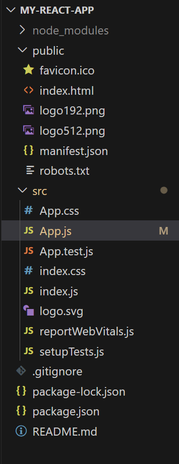

Frameworks/Libraries are used for making web apps. Libraries come packed with prebuilt functionalities that make implementing certain features
easier. For example, React and Angular allow for easier UI design with web Applications. Node.js and Nest.js are examples of libraries that are used
for backend.
type
As a platform, Angular includes a component-based framework for building scalable web applications. Components are architectural building blocks encapsulating templates, data and behavior. This facilitates the creation of reusable and modular UI elements, streamlining development and enhancing maintainability. This video goes a little deeper on how angular works.
This will create a new directory that contains your new react app.
Angular
Angular is a powerful and widely-used framework that simplifies the development of dynamic and single-page web applications, revolutionizing the way we build and interact with web content Key features
- Modularity
- Two way data Binding
- Dependency injection
ng new myapp
and code myapp to open the angular app in Visual Studio Code
Angular Workspace:
In the Explorer section, you will see all the files of the Angular Project.node_modules contains all the libraries that are necessary to the angular project's functioning.
type
ng serve myapp in the terminal to get a default angular app.
As a platform, Angular includes a component-based framework for building scalable web applications. Components are architectural building blocks encapsulating templates, data and behavior. This facilitates the creation of reusable and modular UI elements, streamlining development and enhancing maintainability. This video goes a little deeper on how angular works.
React JS
React is an open-source JavaScript library for building user interfaces or UI components.
Developed and maintained by Facebook, React is widely used for creating dynamic and
interactive web applications with a focus on a reusable and declarative approach to building UI components.
To make a React app, make sure you have node.js installed, and type create-react-app myapp
This will create a new directory that contains your new react app.
App.js is your main html page. It returns a javascript
function, which contains html componenets.
To make a test build of the app, type
To make a test build of the app, type
npx start in the terminal, with the react app as the working directory
The angular Workspace

The react workspace